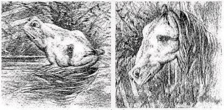
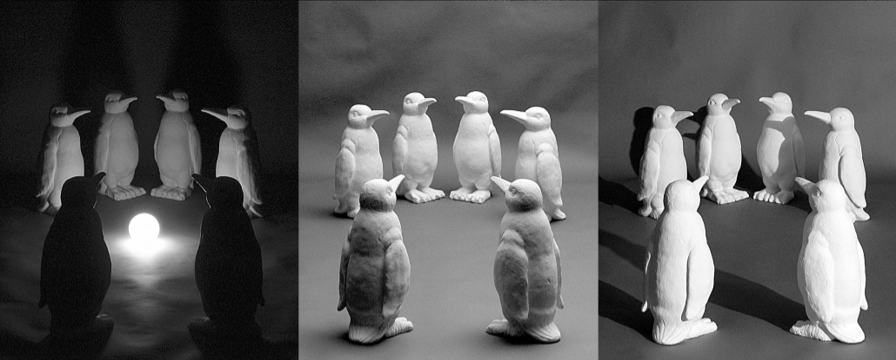
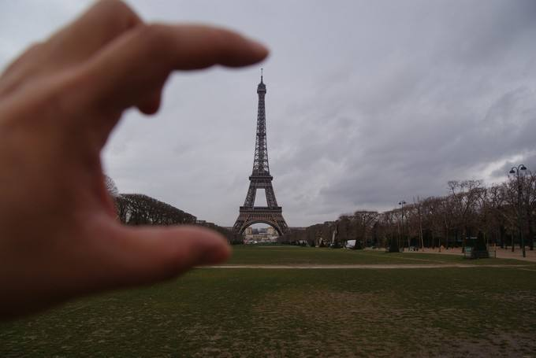
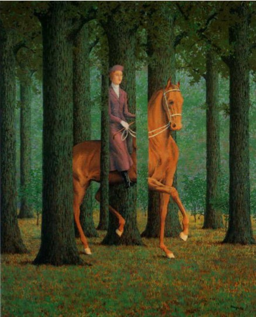
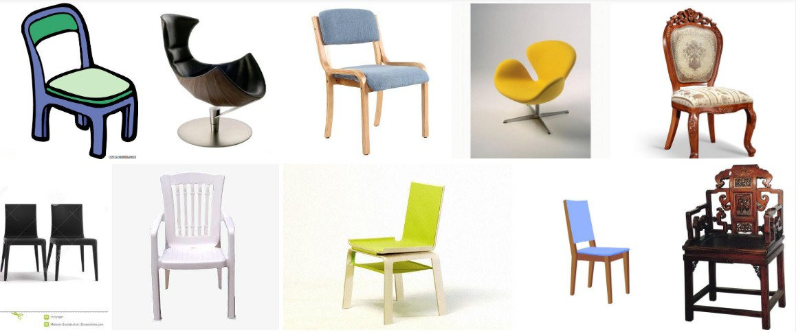

跳转至
黑马机器人—OpenCV机器视觉：让机器看见世界！
面临的挑战
键入以开始搜索
黑马机器人—OpenCV机器视觉：让机器看见世界！
Home
01_OpenCV基础
01_OpenCV基础
概述
面临的挑战
面临的挑战
目录
视角变化
光照变化
尺寸变化
形态变化
背景混淆
遮挡
类内物体的外观差异
OpenCV安装
入门案例
图片的几何变换
图像特效
图片美化
视频处理
02_OpenCV高级
02_OpenCV高级
学习目标
人脸识别
HSV颜色模型
颜色过滤
图像的二值化
图像的噪声
03_OpenCV进阶
03_OpenCV进阶
学习目标
直方图匹配
图片卷积
霍夫变换
边缘与轮廓
形态学变换
模板匹配
案例:提取车道线
案例:背景消除
案例:flappybird
04_CPP版OpenCV
04_CPP版OpenCV
学习目标
配置cpp环境
Mat类
直方图
模板匹配
图像的卷积
形态学变换
透视变换
霍夫圆
轮廓提取
CPP操作小案例
泛洪填充/漫水填充
图像分水岭
距离变换
0. 图片修复
1. 切边
2. 切边+旋转
3. 直线检测
4. 图像计数
5. 图像分割
6. 证件照换背景
目录
视角变化
光照变化
尺寸变化
形态变化
背景混淆
遮挡
类内物体的外观差异
面临的挑战
¶
视角变化
¶

光照变化
¶

尺寸变化
¶

形态变化
¶
背景混淆
¶
遮挡
¶

类内物体的外观差异
¶
